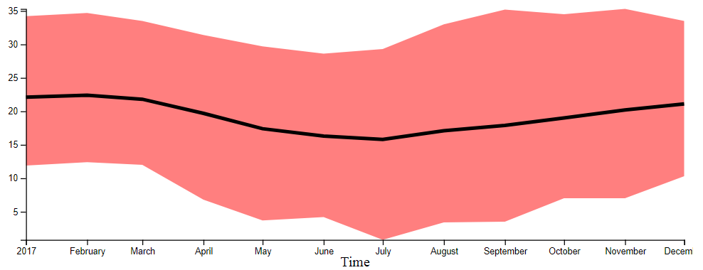

Visualização de Dados 2018.1 Lista de Exercícios 2
Informações Gerais
O objetivo desta lista é praticar os conceitos vistos em sala e construir uma base de código que será possivelmente útil para o projeto da disciplina.
É recomendada a leitura dos capítulos 1 e 2 do livro Interactive Data Visualization for the Web 2nd Edition e também o uso da documentação da Mozilla Developer Network.
Data de Entrega
A entrega deverá ser feita via GitHub até 12/04/2018 até 23:59. Instruções para entrega no Google Classroom. Os arquivos deveram ser entregues dentro de uma pasta chamada lista2.
Problema 1
Para a solução deste problema, crie um arquivo problema1.html e outro chamado problema1.js. Neste problema, o nosso objetivo é criar uma função que gera visualizações de séries temporais.
Como dataset de teste, usaremos os dados climáticos da cidade de São Paulo contidos na wikipedia. Para incluir o dataset, inclua o arquivo
saopaulo.js. Este dataset contém 3 arrays: temperatura mínima, média e máxima para cada mês do ano na ordem de Janeiro a Dezembro.
Crie um gráfico que mostre a evolução da temperatura mínima média, temperatura média e temperatura máxima. A temperatura média dever ser visualizada como uma linha preta. A região entre as curvas de temperatura mínima e máxima deve ser mostrada como uma região vermelha. O gráfico deve se assemelhar ao gráfico abaixo:

Problema 2
Neste problema, usaremos um conjunto de dados de passagens aéreas que pode ser encontrado neste link. Para usar o dataset inclua o arquivo
trips.js nos htmls criados.
O objetivo deste exercício é criar um sistema com duas vistas para visualização dos dados das viagens aéreas citado acima. A primeira vista deve conter um histograma que mostra no número de viagens aéreas por compainha. A segunta é um scatterplot que deve mostrar a diferença do numéro de dias entre a postagem do preço e o incício da viagem no eixo X (post e start) e o preço da passagem no eixo Y. O scatterplot deve conter eixos.
Problema 3
O objetivo deste problema é coordenar as duas visualizações do problema 2. No mesmo arquivo de solução do problema 2, implemente as seguintes ações:
O scatterplot deve implementar uma ação brush. Esta ação deve atualizar o histograma para mostrar a quantidade de pontos selecionados no scatterplot para cada uma das companhias.
As barras do histograma devem funcionar como checkboxes, i.e., quando clicadas devem esconder/mostrar os dados da companhia aérea correspondente. As ações do scatterplot devem só ter efeito nos pontos ativos (mostrados na tela)